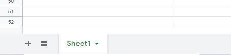
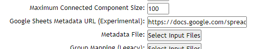

Metadata¶
Summary¶
The metadata file used in GNPS describes the properties of a file/sample (e.g. sample type, year of analysis, and collection method). Metadata adhering to the accepted formatting for each tool enhances data analysis and visualization options. We strongly encourage you to prepare metadata files in advance and upload to the supplementary file folder in the corresponding MassIVE dataset. However, we understand that all of this information might not be available, so it is a suggest starting point.
Metadata Formats¶
There are two metadata formats we accept for the majority of GNPS workflows:
- tab separated tsv file
- Google Sheets shared link
Google Sheets Supported Workflows
- Classical Molecular Networking Release 22 or later
- FBMN Release 23 or later
ReDU Metadata¶
The recommended starting point for both of these metadata is ReDU Sample Information Template (additional documentation can be found here). Users can add an unlimited amount of additional columns to the ReDU Sample Information Template. To add additional columns that are recognized by GNPS workflows, you can prefix the column header with ATTRIBUTE_ (e.g. ATTRIBUTE_Organism). There are specific instructions on required columns and formatting detailed for GNPS tools below.
Note
This standard metadata format works for the following GNPS tools
- Classical Molecular Networking
- Feature Based Molecular Networking
- GC Molecular Networking
- Qemistree
Metadata file used must be a tab-delimited text file. A .tsv can be downloaded from the ReDU Sample Information Template. Users that create a metadata file without using the ReDU Sample Information Template using a text editor (e.g. Microsoft Excel, Notepad++ for Windows, gedit for Linux, TextWrangler for Mac OS) should save as a .txt (tab-delimited).
Warning
Excel (xlsx), rich text (rtf) are not supported.
Barebones Metadata¶
Starting from scratch, you can simply list the filenames for your mass spectrometry files and extra columns describing each file.
Here is an example file without the ReDU Sample Information template in Google Sheets and as a tsv download if you Right-click, and Save link as to download. A text editor can be used to edit it as desired.
Formatting metadata
The only required columns in the metadata is "filename" and the file names should match those uploaded to GNPS and selected for analysis. Capitalization matters.
To add additional columns that are recognized by GNPS workflows, you can prefix the column header with ATTRIBUTE_ (e.g. ATTRIBUTE_Organism). Columns without the ATTRIBUTE_ prefix will be ignored.
Google Sheets Metadata¶
Using metadata in Google Sheets is a relatively new feature and we warn there might be some bumps in the road. You can find the a barebones example here.
In order to use Google Sheets as your source of metadata you will need to accomplish the following steps.
Make sure you metadata is the first sheet of your Google Sheets

Share metadata so that others can view simply by having the link
Paste Link into Metadata Field in GNPS

Requirements Specific to Molecular Networking¶
The use of a metadata file is an alternative way to assign groups when selecting data input files within the workflow of GNPS. The current version of molecular networking allows to use the metadata table as an input.
Tip
Indicate which metadata columns should be considered in analysis by opening the file in a text editor and adding "ATTRIBUTE_" to the header of the column.
- Save the file (must be tab-delimited text file)
- Users must upload their data file
- Users must select the metadata file and place it in the "Metadata File" folder
Danger
Although it is possible to use the legacy group mapping and attribute mapping file, we strongly advise against using this method.
Requirements Specific to Qiime2¶
GNPS communicates with Qiime2. PCoA visualized using EMPeror and Qiime outputs (.qza/.qzv), including a BIOM formated output, can be generated. Microbe-metabolite interactions can also be studied with MMVEC. GNPS will parse any extra column in the metadata file and output them in the Qiime2 supported files (BIOM/qza files). Note that by default the mass spectrometry filename will be used as sample name for Qiime2 files. Alternatively, it is possible to specify an additional metada column called "sample_name" that will be used instead as sample name in Qiime2, to enable joint mass spectrometry - metabolomics analysis such as MMVEC.
- Save the file (must be tab-delimited text file)
- Users must upload their data file
- Users must select the metadata file and place it in the "Metadata File" folder
- Optional Add an extra column called "sample_name" to the metadata file using a text editor. The sample name will replaced the mass spectrometry filename in the Qiime2 output. For joint mass spectrometry - sequencing analysis with MMVEC, provide the sequencing sample name as indicated in the qiime2 file used (BIOM/qza file).
Requirements Specific to Qiita¶
GNPS communicates with Qiita. Specifically, you can use the output of GNPS to add metabolomics data into an existing Qiita dataset. This is handled through the Biom table output as a qiime2 qza artifact. The key feature is renaming the mass spectrometry file into a sample identifier so that the identifiers are concordant.
A Qiita ID with corresponding information must first be created.
-
Add an extra column called "sample_name" to the metadata file using a text editor. The identifer must contain the Qiita ID prepended to the sample identifier using a period (e.g. 10317.000096815).
-
Save the file (must be tab-delimited text file)
- Users must upload their data file
- Users must select the metadata file and place it in the "Metadata File" folder
If performing additional analysis in Qiime using the .qza, it is required to add a row indicating the type of variable.
Requirements Specific to 'ili¶
The metadata can also be used to specify spatial coordinates for direct visualization of the data in 'ili toolbox. It creates really cool plots like this:

Extra columns are required in the metadata file
A text editor should be used to add the following columns in order (required):
- "COORDINATE_X" - X coordinate on the 2D/3D model
- "COORDINATE_Y" - Y coordinate on the 2D/3D model
- "COORDINATE_Z" - Z coordinate on the 2D/3D model
- "COORDINATE_radius" - radius for the spot in 'ili toolbox.
"filename" must be the first column

- Save the file (must be tab-delimited text file)
- Users must upload their data file
- Users must select the metadata file and place it in the "Metadata File" folder
- Users must upload the corresponding .STL file and place it in the "STL Model for ili" folder
Page Contributions¶